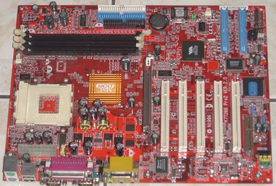
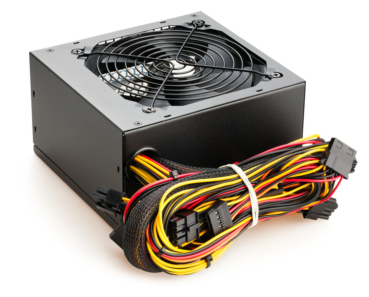

Материнская (систе́мная) пла́та. В просторечии: «материнка» — печатная плата, являющаяся основой построения модульного электронного устройства, например — компьютера.

Системная плата содержит основную часть устройства, например, в случае компьютера — процессор, системную шину или шины, оперативную память, «встроенные» контроллеры периферийных устройств, сервисную логику — и разъёмы для подключения дополнительных взаимозаменяемых плат, называемых платами расширений, как правило подключённые к общей шине или шинам — так, например, в начале 2000 годов материнская плата IBM PC-совместимого компьютера, как правило, несла разъёмы трёх различных шин — ISA, PCI и AGP.
Встроенный источник электропитания компьютера — устройство, предназначенное для преобразования напряжения переменного тока от сети в напряжение постоянного тока с целью питания компьютера или компьютер-сервера.

В некоторой степени блок питания также выполняет функции стабилизации и защиты от незначительных помех питающего напряжения.
Также, как компонент, занимающий значительную часть внутри корпуса компьютера, несёт в своём составе (либо монтируемые на корпусе БП) компоненты охлаждения частей внутри корпуса компьютера.